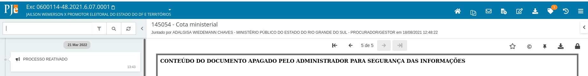

Remessa
Aqui estarão agregadas informações para auxiliar os servidores da Justiça Eleitoral na remessa de processos entre instâncias.
IMPORTANTE!!!!! : só utilize essas opções após ter certeza da situação dos processos nas duas instâncias envolvidas. AS INSERÇÕES DE MOVIMENTOS PROCESSUAIS NÃO PODERÃO SER DESFEITAS.
Remessa concluída sem bloqueio de processo
Por vezes o servidor tenta realizar a remessa de um processo do ambiente do primeiro grau para o TRE e, apesar do processo chegar no ambiente do TRE, o sistema não bloqueia o processo de origem para tramitação e inclusão de documentos.
É importante que esse bloqueio ocorra para que novas informações sejam inseridas apenas na instância onde está ocorrendo a tramitação, no caso, no TRE. Caso o processo esteja na tarefa de finalização do envio (no exemplo acima, está), o servidor deve acionar a opção "Retornar para análise sem registro de movimento".

Para realizar o bloqueio, o usuário pode acionar a transição "Bloquear processo que está em outra instância" disponível a partir das tarefas de análise (Para o primeiro grau: Analisar processos, Analisar novo processo e Analisar determinação, urgentes ou não - Para as instâncias colegiadas: Verificar pendências).
Isso fará com que o processo seja tramitado para a tarefa respectiva de finalização do envio bloqueado para tramitação de petições.

Essas instruções também estão valendo para serem usadas nos TREs e no TSE. A tarefa onde o processo normalmente estará é a "Aguardando apreciação de outra instância".
Processo não enviado e bloqueado
Por vezes o servidor tenta realizar a remessa, o processo não chega na instância de destino, mas na instância de origem fica bloqueado para tramitação e peticionamento.
Dessa forma, o servidor não consegue fazer uma nova tentativa de remessa. Para desbloquear o processo, o servidor deve abrir os autos e clicar na opção "Iniciar atividade de digitalização".

O acionamento dessa opção retirará o bloqueio do processo e abrirá uma nova tarefa, denominada "Processo destravado".
O servidor deve finalizar a tarefa.
Depois, é só tramitar o processo na tarefa principal em que ele se encontra já desbloqueado. Em geral o processo estará na tarefa de finalização do envio. Se for necessário o movimento de ativação, deve ser utilizada a opção "Reativar com registro de movimento". Se não for o caso de lançar movimentos, utilizar a opção "Retornar para análise sem registro de movimento".
Processo enviado que necessita movimentos de baixa
Algumas vezes pode ocorrer de o processo ser remetido à outra instância, mas os movimentos de baixa não serem lançados na origem. Nesse caso, o servidor pode fazer o lançamento dos movimentos. Para que os movimentos sejam lançados corretamente, o sevidor deve SEMPRE SELECIONAR O MOTIVO DA REMESSA E A INSTÂNCIA DE DESTINO. Se não selecionar o motivo da remessa, a transição apresentará erro e não será concluída. Se não selecionar a instância de destino, o sistema poderá atribuir um valor errado ao movimento e o MOVIMENTO NÃO PODERÁ SER AJUSTADO.
Estando o processo na tarefa de remessa, ele deve selecionar a transição para finalização do envio com registro de movimento.
No caso acima, a transição é "Registrar movimento baixa (selecione instância e motivo)". O motivo da remessa deve sempre ser informado nesse caso, já que o movimento de remessa é constituído também por essa informação, assim como a instância de destino.
Nesses casos, o processo será tramitado para uma tarefa intermediária denominada "Conferir processo remetido". Essa tarefa é importante para identificarmos os casos em que se tenha tramitado manualmente o processo sem que ele tenha chegado ao destino, facilitando o trabalho da investigação de problemas.

Deve-se selecionar "Aguardando apreciação do TRE" ou equivalente no segundo grau para que o processo fique na tarefa de finalização do envio.
Processo desbloqueado que necessita movimentos de reativação
Pode acontecer de um processo retornar de uma outra instância via remessa e os movimentos de reativação não terem sido lançados. Nesse caso, a partir da tarefa de finalização do envio, o servidor pode acionar a transição "Reativar com registro de movimento".
O processo será encaminhado para a tarefa de análise e nos autos o movimento de reativação será lançado.
